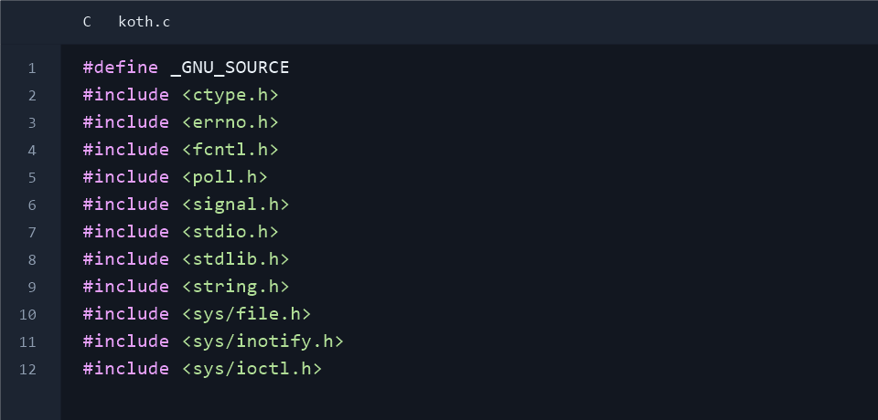
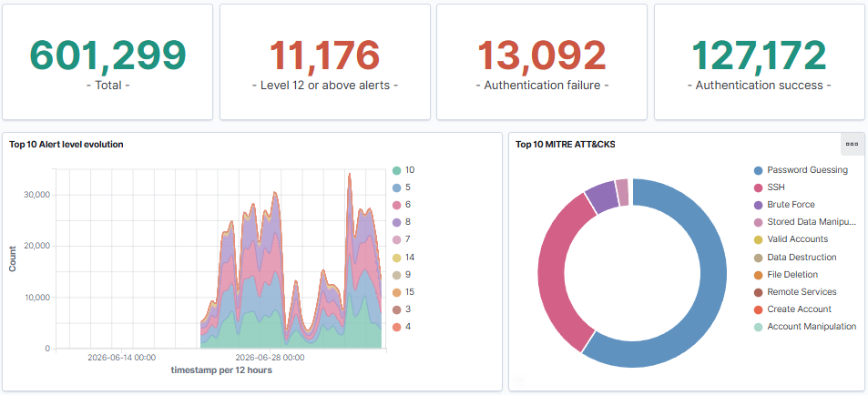
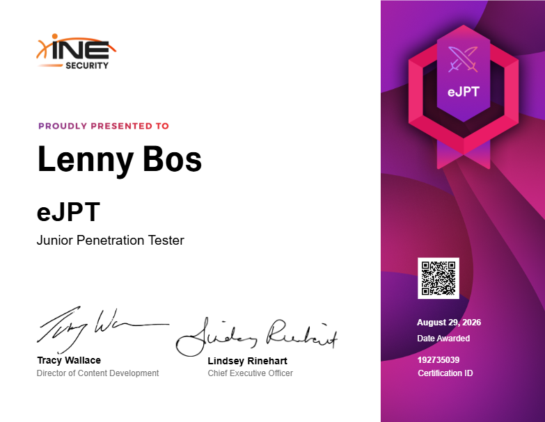
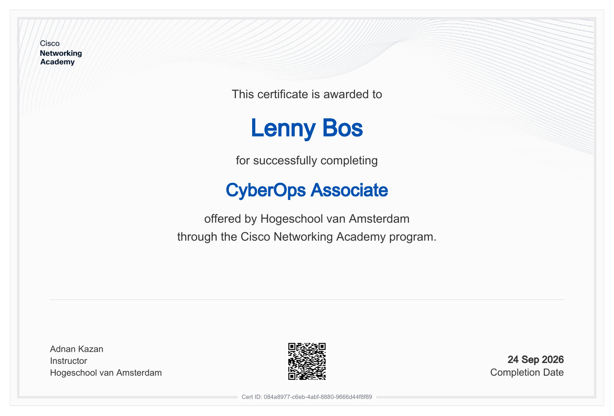

Cyber Security Graduation Internship · Rijkswaterstaat
Scheduled to start on .

I study Cyber Security at the Amsterdam University of Applied Sciences and have a background in software development. My projects include Windows compliance monitoring in Splunk, SSH threat investigation with Cowrie and Wazuh, and web application security assessments.
Scheduled to start on .
Developed and maintained client websites, online stores and portfolios with JavaScript, PHP/WordPress and React/Vue.

Linux security / Persistence research
I built a user-space persistence tool in C for TryHackMe King of the Hill matches and examined the evidence it leaves on a Linux host.
Read case study
Threat hunting / Detection engineering
I built a public SSH honeypot and used Wazuh to investigate roughly 600,000 attack events collected in just over two weeks.
Read case studyI built a Splunk workflow that turns Windows build inventories into support-status reports.
I deployed a public Cowrie SSH honeypot and built a Wazuh dashboard to investigate real login attempts and session activity.
I built an isolated lab to practise investigating security events in Wazuh.
I assessed an intentionally vulnerable web application in a controlled lab using Burp Suite and the OWASP Top 10.
I reviewed Windows privilege boundaries in a grey-box assessment and documented the risks and recommended fixes in a report.
School assessment in a controlled lab for a fictional organisation.
Python-based remote administration proof of concept controlled through a Discord bot, built to study command-and-control behaviour and its defensive implications.
Source code and downloads are intentionally unpublished.
Controlled demonstrations of network attack techniques, their impact and how to detect or mitigate them.
Wazuh · Wireshark · Nmap · Burp Suite · Kali Linux · Hack The Box · TryHackMe
Windows · Linux · PowerShell · VirtualBox · Python · Git · JavaScript · React · WordPress
Splunk, SPL, Wazuh, SIEM, log analysis and threat investigation
Burp Suite, Nmap, OWASP Top 10 and web application testing
Python, PowerShell, Bash, JavaScript and PHP
Linux, Windows, Docker, virtualisation, TCP/IP, DNS and Wireshark

Cisco · 2026

My team investigated realistic security scenarios in Splunk. We were invited to compete at EMEA Boss of the SOC on .

Amsterdam University of Applied Sciences (HvA) · Expected July 2027
ROC Mondriaan · Graduated in 2025
I am a Cyber Security student based in the Netherlands. My interests include security operations, detection engineering, incident response, threat intelligence, security engineering and penetration testing. I learn by building controlled environments where I can investigate Windows security, identity, network attacks, privilege escalation and defensive monitoring. Outside my studies, I take part in various sports and keep developing my practical security skills.
I will start my Cyber Security graduation internship at Rijkswaterstaat in February 2027. I am exploring graduate and entry-level roles in security operations, detection engineering and security engineering from July 2027.